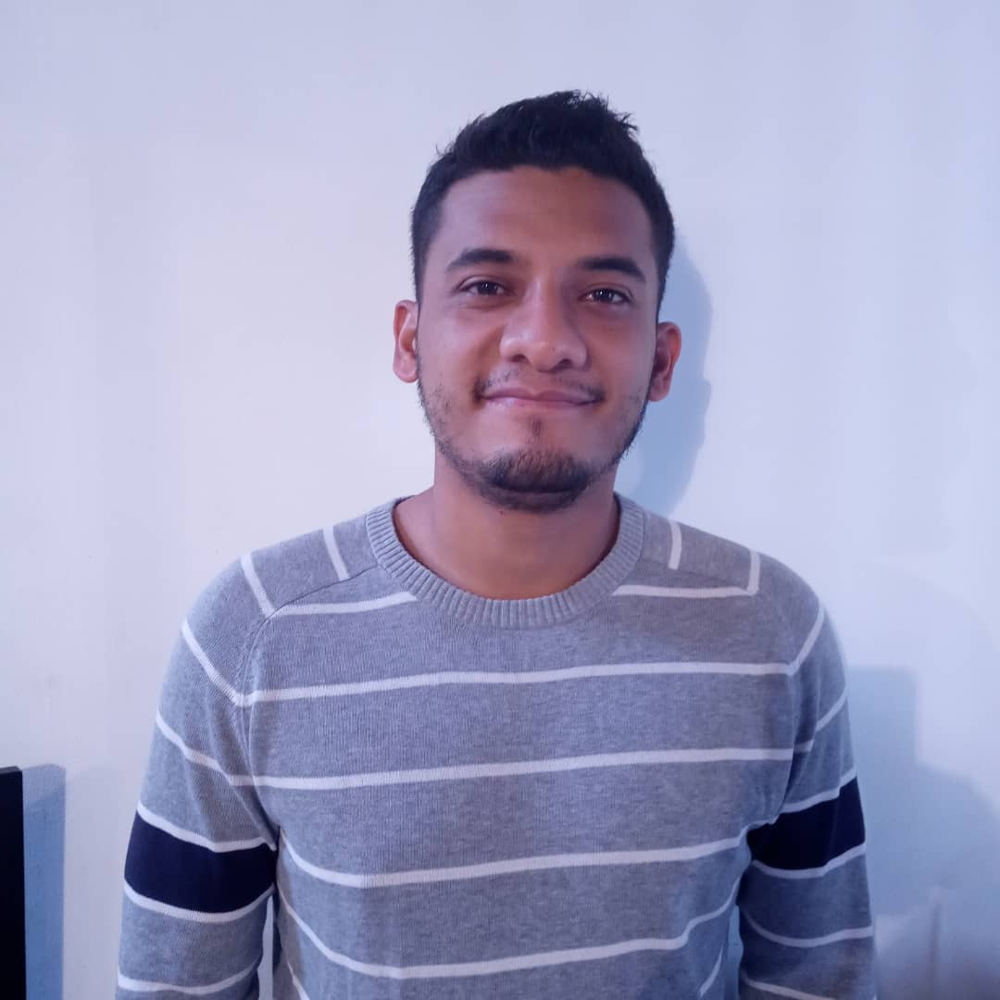

Angelo López
Descripción Personal
Tengo 27 años de edad, soy músico y trompetista profesional de Orquesta Sinfónica con mas de 10 años de experiencia, he tenido la oportunidad de viajar por muchos paises representando a mi nación, así como también he tenido la oportunidad de optar y rendir en la Academy Brass Alicante, he participado en el 1er Concurso 'Eric Aubier' en Colombia Medellin. En la actualidad soy 1era trompeta dentro de la Orquesta Sinfónica Francisco de Miranda.
Skills
Comunicación efectiva
Trabajo en Equipo
CSS/HTML
Educación
Unidad Educativa "Campaña de Carabobo"
Egresado de Bachiller en Ciencias desde el 2011
Universidad Santa Maria
Estudios Internacionales (4to sementres)
Conservatorio Simón Bolívar
Mención trompeta anclado a la Academia Latinoamerica de trompeta
Curso de Copywriting Maider Tomassena
Como crear anuncios y sus técnicas de persuación
Experiencia Laborales
Integrante de la Orquesta Sinfónica de Juventudes Francisco de Miranda 2007-2016, en la cual tuve la oportunidad de realizar giras a: Ecuador, España, Japón, Singapure, La India, Francia, Turquía, Chipre, Vietnam, entre otros
Integrante de la Orquesta Sinfónica Francisco de Miranda 2016-2021
Creador de Contenido para PYMES 4 meses.
Hobbies
Cocinar y escuchar Mahler o Tchaikovsky son cosas que amo hacer día a día, también lo hago cuando estoy practicando programación. Estudiar la Biblia con recursos exegéticos. La Historia, Política, Economía, Filosofía son disciplinas afines a mi pasión, lo englobaría al decir que me gusta la Erudición.
¿Por qué estudio esta Carrera?
Esta carrera siempre me llamo la atención desde niño pero nunca me ateví porque veía geroglíficos, pero despues de casarme y luego experimentar la pandemia, tuve que decidir el cambio de profesión porque necesito sustentar un hogar, sin embargo no sabia como hacerlo hasta que ingresé a internet y googlee cuales eran los empleos mas demandados y entre todos esta el desarrollo web, desde este momento adquiri la razón y motivación para hacer un cambio en mi vida hasta que encontré en henry.
Expectativas al finalizar la carrera
Conseguir un empleo en el extranjero que me permita trabajar remotamente y viajar con mi estposa por el mundo y cumplir nuestras metas como profesionales y amantes del arte.